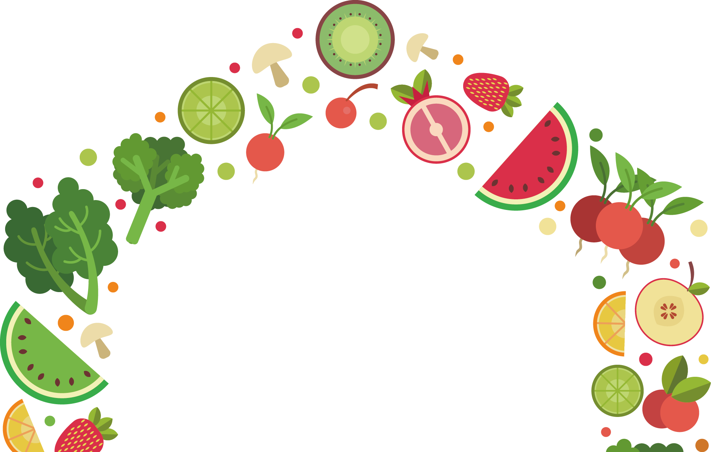
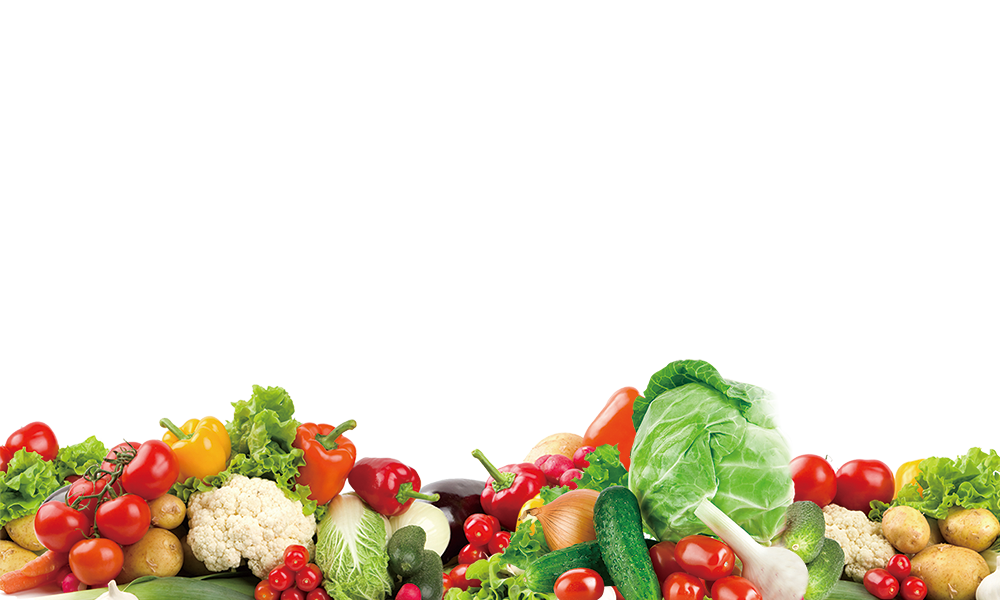

🌱 CYBER-PHYSICAL SENSOR FUSION & ICMR-NIN
Fresh, Organic & Intelligent
Smart Cyber-Physical Dietary Tracking
Zero manual logging. NutriSense binds top-down Computer Vision, 4-cell load scale telemetry, and certified ICMR-NIN nutrition data for effortless kitchen health intelligence.